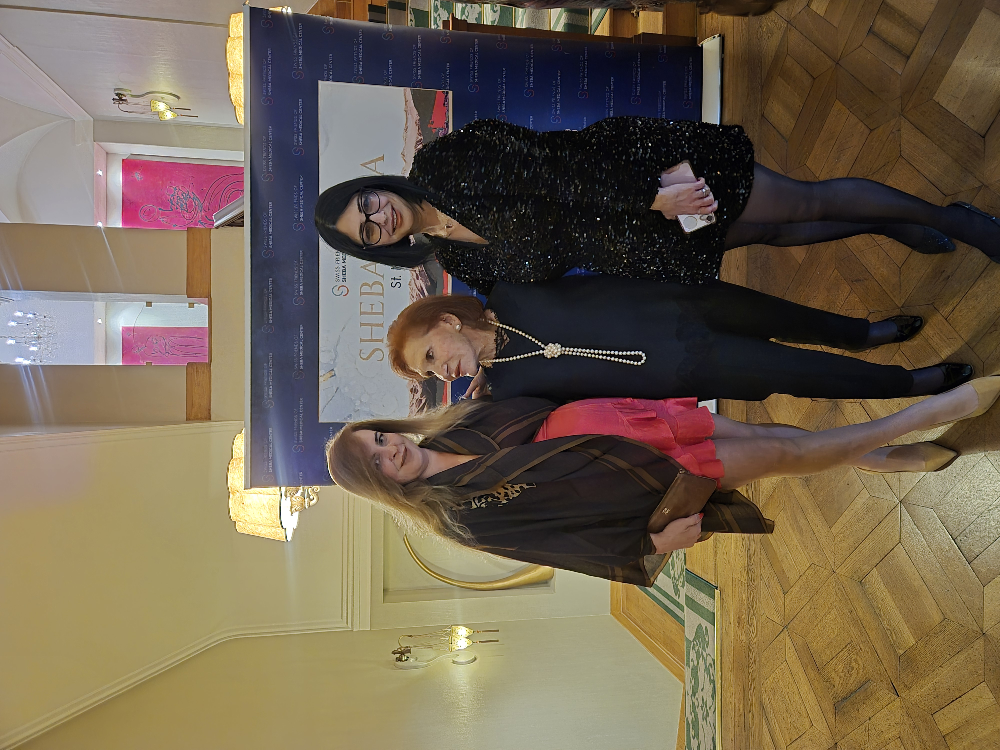

Capital with
conscience.
A fund built on the belief that capital should serve a higher purpose.
Our story
How it started
DKF was born from a simple conviction: wealth should be a vehicle for healing, not just for accumulation. Founded by three women with deep roots in design, business, and healthcare, the fund channels private capital into areas where it can do the most good.
We started with the understanding that philanthropy alone isn't enough. Donations create immediate change, but sustained impact requires a model that regenerates. That's why DKF operates on two parallel tracks — direct giving and strategic investments in Health-Tech — ensuring that our ability to give only grows over time.
What began as a personal commitment has become a structured system for impact. Every shekel we invest, every grant we make, every partnership we form — it all flows back to one purpose: better healthcare for more people.
“Philanthropy is not about money… it's about using whatever resources you have at your fingertips and applying them to improving the world.” — Melinda French Gates
Our approach
Two guiding principles
01
Philanthropy-led
Giving is our core. Every decision starts with the question: where can this capital create the most meaningful change?
Giving ↓02
Investment-backed
Strategic investments in Health-Tech funds generate returns that fuel more giving. A sustainability engine for philanthropy.
Investing ↓Giving
Where the giving goes.
Focus
Community Health
Funding hospitals, clinics, and health services in underserved communities. Making quality care accessible to those who need it most.

Partnership
DKF & the Friends of Sheba
Sheba Medical Center, one of the world's leading hospitals, operates a global Friends network that connects philanthropists with the medical center's mission. DKF is a proud partner within this network, contributing to Sheba's efforts in clinical care, medical research, and healthcare innovation.
Through this collaboration, DKF supports initiatives that bring together leaders in medicine, technology, and philanthropy — united by the belief that world-class healthcare should be accessible to all. From rehabilitation wings to pediatric care, the partnership channels resources where they matter most.
Investing
Giving that keeps working.
01
Capital is allocated
Private capital from the fund is directed into two channels: direct giving and strategic Health-Tech investments.
02
Investments generate returns
As LP in established Health-Tech VC funds, DKF's investments grow — creating returns that go back into the system.
03
Returns fuel more giving
Investment returns are recycled back into philanthropy — more grants, more projects, more impact. The cycle repeats.
Where we invest
Three sectors we believe in
Digital Health
Platforms and solutions that make healthcare smarter, more accessible, and more personalized — from telemedicine to AI diagnostics.
Medical Devices
Innovative devices that improve patient outcomes — from minimally invasive surgery tools to monitoring wearables.
Health Infrastructure
The backbone of care: hospital management systems, supply chain optimization, and health data platforms.
Why these choices
We don't chase trends. We invest in Health-Tech sectors with proven trajectories and clear alignment with our mission. Every fund we partner with as LP must demonstrate not only strong financial fundamentals, but a real commitment to improving healthcare outcomes. Our returns don't just sustain DKF — they validate a model where doing good and doing well are the same thing.
The founders
Three women. One conviction.

Head of Innovation & Ventures
Ira Fradkin
With a degree in Biology and years of hands-on experience in clinical research at global pharmaceutical companies and leading hospitals, Ira understands healthcare from the inside. She holds a degree in Multidisciplinary Design — a unique combination that allows her to see both the science behind medical innovation and the human experience it serves.

Founder & Visionary
Alin Kipnis
Co-founder of one of Israel's most valued defense-technology companies — a global leader in advanced imaging systems. With decades of experience building ventures across defense, design, and real estate, Alin brings to DKF the strategic precision of someone who scaled a startup into a multi-billion-dollar enterprise — now channeled entirely into healthcare impact.

Head of Philanthropy & Social Impact
Carine Bar Or
With over a decade of experience in the philanthropic sector, Carine has held senior leadership roles at some of Israel's and America's most respected foundations. Her career spans strategic grantmaking, national program management, and community empowerment. Philanthropy is her calling — driven by a deep love for giving and a belief that structured generosity can transform lives.
Want to be part of it?
Join us in building a healthier future through strategic giving and investment.